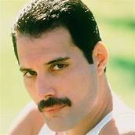
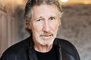
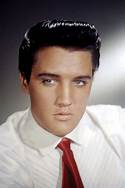
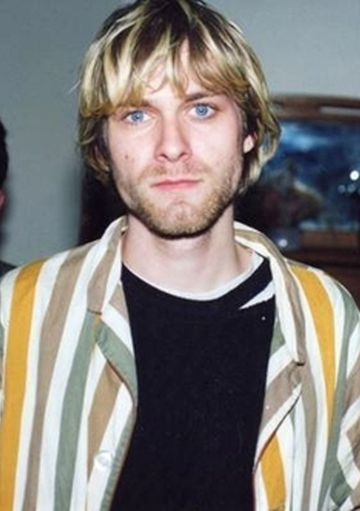
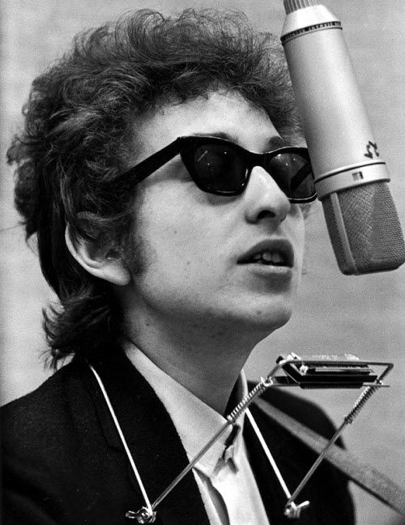

Show Information:
Singers:

Freddie Mercury (born Farrokh Bulsara; 5 September 1946 Stone Town
– 24 November 1991 London) was a British singer, pianist and songwriter,
known for his work with the British rock band Queen, which he joined as
vocalist from 1970 until the year of his death, 1991.
Relationship: Mary Austin (1970-1976), Jim Hutton (1985-1991)
Parents: Jer Bulsara, Bomi Bulsara
Active since: 1969
Generes music: Pop music, Glam rock, Progressive rock,
Important works: Mr. bad guy

George Roger Waters (born 6 September 1943 in Guildford) is an English
singer, songwriter and musician. He is one of the founders of the
progressive rock/psychedelic rock band Pink Floyd, in which he served
as bassist and vocalist.
Born: 6 September 1943 (age 78), England
Spouse: Carolyne Christie (c. 1976-1992), Judith Trim
Parents: Eric Fletcher Waters, Mary D. Whyte
Active since: 2005, 1964
Group: Pink Floyd

Elvis Aaron Presley (January 8, 1935 – August 16, 1977) was an American singer, musician, and actor. Nicknamed the "King of Rock and Roll", or simply "The King", he is considered one of the most significant cultural icons of the 20th century.
Spouse: Priscilla Presley (1967-1973)
Children: Lisa Marie Presley
Parents: Gladys Presley, Vernon Elvis Presley
Active since: 1953
Genre: Rock, Country Music, Pop Music,

Kurt Donald Cobain (February 20, 1967 – April 5, 1994) was an American singer, songwriter and musician best known for being the founder, vocalist and guitarist of the band Nirvana.
Born: February 20, 1967, Aberdeen, Washington, United States
Children: Frances Bean Cobain
Parents: Donald Leland Cobain, Wendy Elizabeth Fradenburg
Spouse: Courtney Love (c. 1992-1994)
Genre: Alternative Rock, Grunge, Punk Rock

Bob Dylan, born Robert Allen Zimmerman (Duluth, ) is an American singer, songwriter, writer, actor, painter and visual artist and an important figure in popular culture for over fifty years.
Born: May 24, 1941 (age 81), Duluth, Minnesota, United States
Spouse: Carolyn Dennis (c. 1986-1992), Sara Dylan (c. 1965-1977)
Children: Jakob Dylan, Jesse Dylan, Desiree Gabrielle Dennis-Dylan, Maria Dylan, Anna Dylan, Sam Dylan
Parents: Beatrice Stone, Abram Zimmerman
Active since: 1959